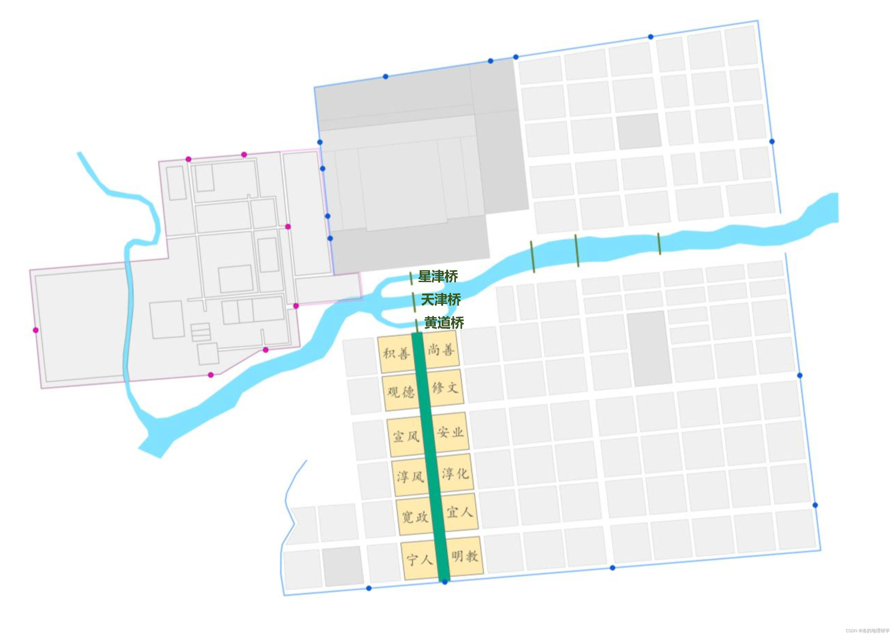

本页说明地图中洛水、桥梁、里坊及上阳宫布局的依据。考古遗迹和原始遗址标绘优先；示意图不能代替实测城界。
下图为用户提供的参考图。图面出版来源、编绘年代及测量精度尚未核清。地图按已核对的天街与南墙框架配准，保留定鼎门、应天门及考古墙线等既有定位；图示没有用于反向移动这些考古遗迹。
城门名结合文献与复原研究核对；候选门址和图示范围仍是参考定位。里坊及未发掘宫区不表示已经整体发掘。

钱国祥《隋东都宫皇城的空间格局复原研究》全文与图件（《华夏考古》2023年第6期，洛阳师范学院转载）。
历史岸线、水道和洲岛沿参考图描绘，属于图示复原，非单一年份的实测岸线。现代水系保留。洲岛作为水面孔洞，不填作水域；图幅裁切端不表示真实岸线。
三座轴线桥采用北黄道桥、中天津桥、南星津桥的次序，纠正参考图南北桥名倒置。东侧三条桥线的具体位置与旧中桥、新中桥、会通桥的对应仍待核，不表示它们同时存在。
参照2014年《隋唐洛阳城》考古报告复原图及后续研究；图件转引见故宫博物院刊载研究 PDF（图十）。外部 PDF 加载可能较慢，本页说明与参考图可直接阅读。
西侧灰线与粉色外缘按原图可辨的直线、折角和连续关系整理。线条只表达原图符号，不能逐一认作已发掘的墙基、道路或殿基；未标名块状轮廓不随意分配宫殿名。线条连续也不表示遗迹已被完整确认。
图示配准沿用城郭框架，不移动考古点。与原图吻合仅说明描绘关系，不代表地面测量精度。
西侧区域以“上阳宫”标示，有文献和局部园林考古依据。图示边界仍是复原参考，内部各个方框不逐一附会建筑名称。地图上的“上阳宫（地望参考）”是相对位置参考，不是发掘坐标或完整宫界。
现代上阳宫文化园范围不作为唐代上阳宫边界。未获可靠定位的门殿暂不补画成精确点位。
资料说明更新：2026-10-21。图示参考，非实测墙界。